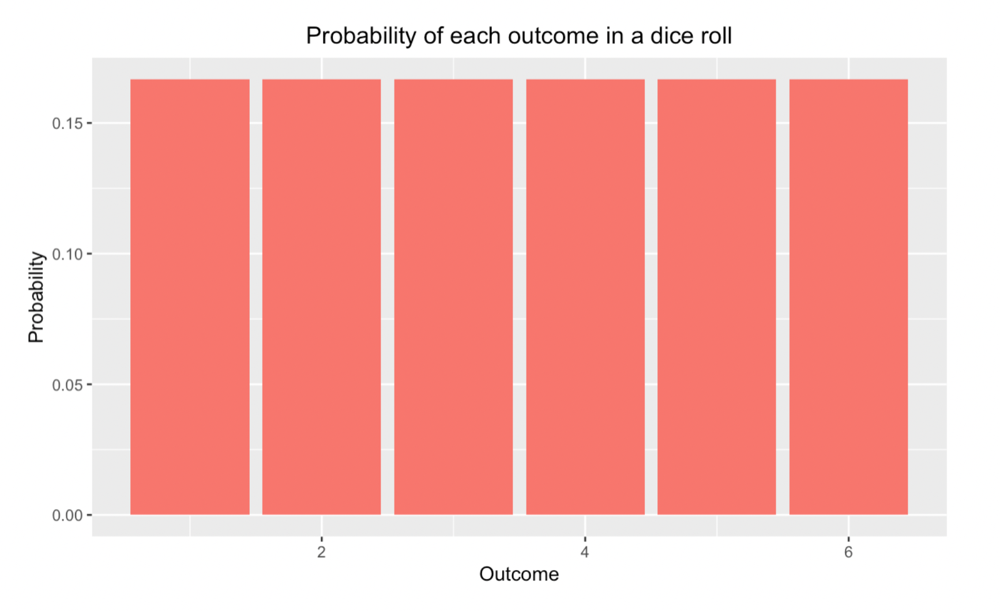
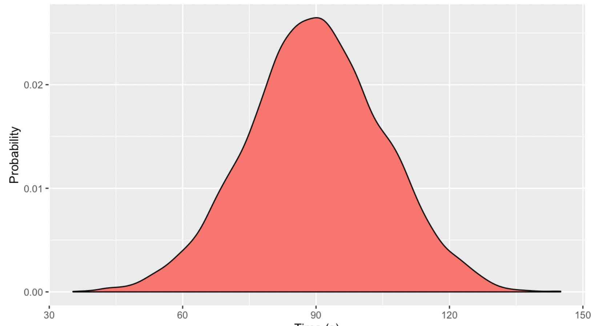
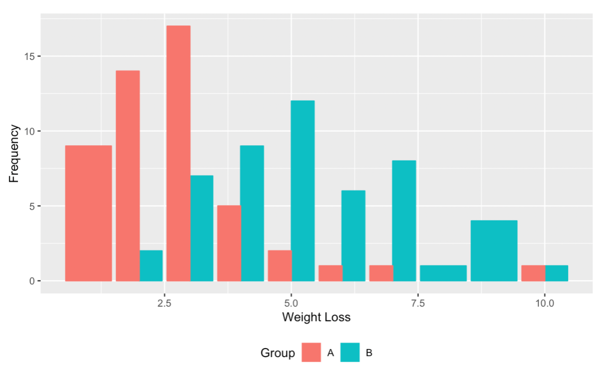
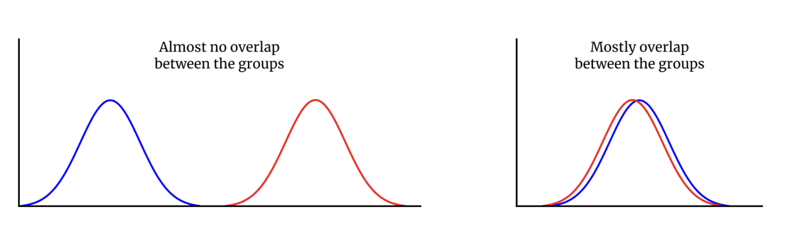
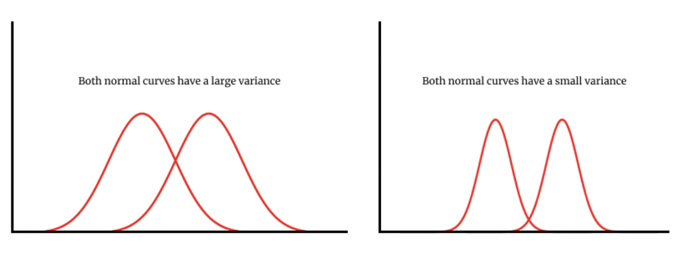

Group assignments
Please check the comments on Latte
We learned about some of the basic ideas behind probability and idea of feature selection
Probability in a dice roll?

- The shape of this probability distribution is so common that it has been given a special name
- Just by looking at a visualization, there's already a lot we can deduce about the random experiment without knowing any specific details about it
We need a convenient, mathematical way to express how probability is distributed since we won't always have a visualization to reference
Probability distribution function:
a function that takes in an outcome and gives the probability associated with that outcome.
PDF
- A function is useful here because it allows us to associate a single probability to a single outcome
- Conventionally, we'll denote a probability distribution function as P
- Using $X$ to represent an outcome, we can represent the probability of dice
- $P(X) = \frac{1}{6}$ for $x$ in $[1,2,3,4,5,6]$
Draw the PDF of sum of two dice rolls
From Random Experiments To Actual Experiments
- When we start learning about hypothesis testing, we'll need to understand how our data is distributed
- We can also think of gathering data as a random experiment in and of itself
- Measure the weights of people in Brandeis
- Weights are continuous values
- If pick a random person, we cannot say with certainty what their weight will be
- because we don't know what we will observe
- So, when we gather data of any sort on a single person, we are essentially performing a random experiment on them
- As we measure more and more people, we'll gather more and more data
- After we gather enough data, we can start to graph the empirical distribution of the data
The empirical distribution shows us how the data we measure is distributed and tells us the probability of seeing a particular value in the data

- As an example, hypothetical data on how fast the students write a course eavluation
- Bell-shaped curve?
- Symmetry?
- Empirical distribution vs. probability distribution
- What's the key differences?
- As we collect data more people, we would expect our empirical distribution to start resembling the actual probability distribution
- Even though we can collect only a finite amount of data, we can still learn about its distribution
Hypotheses and Hypothesis Testing
When we propose an idea for how the world works, we are making a hypothesis
A hypothesis is an attempt to explain a phenomenon based on limited evidence
An essential characteristic of all hypotheses is that they are testable
You can set up a process or experiment that will do only one of two things: support the hypothesis or reject it
One hypothesis corresponds to your own belief about the world, while the other corresponds to the contrary
Suppose we want to test the ad will either increase sells or it won't
- a natural experiment to devise would be to randomly divide up your website users into two populations
- one set of users will see the new ad, while the second set will not see it
- With these two groups in place, you'll measure how many people in each group engage with the ad
- What's the hypothesis?
The hypothesis that stated that the ad won't have an effect on the world is called the null hypothesis
Likewise, the hypothesis that states that it will increase engagement is the alternative hypothesis
Fake Experiment
- We have data from a fake experiment on weight loss
- A company has developed a new drug that was designed to help subjects lose weight
- In order to test the drug, the company gathered people to participate in the study and randomly split them into two groups
- Group A was given a placebo pill, while Group B was designated to take it.
- Group A is our control group, while Group B is our treatment group
- The event we are interested in studying is whether or not the drug helps with weight loss
- $H_0$: the new drug will not reduce the subjects' weight
- $H_1$: the new drug will reduce the subjects' weight
- The company is studying if the new drug will lead to weight loss, so the alternative hypothesis is specifically worded to state this
- If the weight loss can vary in both groups, how would we be able to compare them?
- We need a single value that helps summarize the weight loss in the entire group, and we can get this in the mean or average of each group

- For Group A, most of the weight losses for people in Group A hovers around 2.5 pounds
- As we get farther away from the mean weight loss, there is an approximate symmetric shape to Group A's empirical distribution
- Overall, Group A's distribution forms an approximate bell curve

- Consider some hypothetical situations
- One extreme case is no overlap, while the other is total overlap
- How we would say they are different?
- Recall that normal distributions are defined by two important values: the mean and the variance
- If the means of the two groups are extremely different, it suggests that the groups are truly different from each other

- The variance of the normal curve influences how much it might overlap with other nearby curves, so it plays a critical role in changing how well we can distinguish between two normal curves
- Two normal curves could actually have a small, but meaningful difference between them
- but if they both have high variance, this difference might be hidden
- Let's take another look at our two hypotheses
- $H_0$: the mean weight loss of Group B is the same as the mean weight loss of Group A
- $H_1$: the mean weight loss of Group B is greater than the mean weight loss of Group A
- We can convert the above hypotheses into a mathematical form using some notation
- $H_0: \bar{x_A}=\bar{x_B}$
- $H_1: \bar{x_A}<\bar{x_B}$
- Rewrite
- $H_0: \bar{x_A}-\bar{x_B}=0$
- $H_1: \bar{x_A}-\bar{x_B}<0$
- Note that the variance of the difference
- $\sigma^2_{diff} = \frac{\sigma^2_A}{n_A}+ \frac{\sigma^2_B}{n_B}$
- We moved from comparing two qualities to focusing on their difference instead
- Our first null hypothesis as "the new drug will not reduce the subjects' weight," which we transformed into "the difference in means between the two groups is zero"
Recall from the Statistics Intermediate course that any normal distribution can be standardized,
meaning that we can change it to have mean 0 and standard deviation 1
In order to standardize a normal distribution, we subtract the mean and divide by the standard deviation, as shown below:
$t = \frac{x-\mu}{\sigma}$
- $x$ will corresponds to the actual difference in means that we measured in the data: $\bar{x_A}-\bar{x_B}$
- For this null hypothesis, $\mu$ will be 0 since we are assuming that the drug will have no effect
- We know what the variance is under the null hypothesis, so we can easily find the standard deviation
- $\sigma =\sqrt{\frac{\sigma^2_A}{n_A}+ \frac{\sigma^2_B}{n_B}}$
- Hence,
- $t = \frac{(\bar{x_A}-\bar{x_B}) - 0}{\sqrt{\frac{\sigma^2_A}{n_A}+ \frac{\sigma^2_B}{n_B}}}$
- called a test statistic
- Test statistics often follow a well-known probability distribution
- In this case, t follows a a t-distribution
- Because we are trying to investigate the means of two groups and the test statistic follows a t-distribution, we are conducting a two sample independent t-test
- Suppose we calculated a test statistic of about -6.96
- the test statistic is a ratio between a difference between means and the standard deviation
- we always interpret test statistics relative to a null hypothesis
- We would interpret a test statistic of -6.96 as being about 7 standard deviations away from zero!
- under a normal distribution, most of the data will fall between -3 and 3 standard deviations
- so seeing a test statistic 7 standard deviations away is extremely unlikely
The process of hypothesis testing
- Decide what kind of measurement you will be comparing between the treatment and control
- Define your null and alternative hypotheses in both simple and mathematical terms
- Calculate your test statistic
- Figure out what probability distribution your test statistic comes from
- Use this distribution to calculate your p-value (recall what p-value is)
- Use this p-value to decide whether to reject or fail to reject the null hypothesis